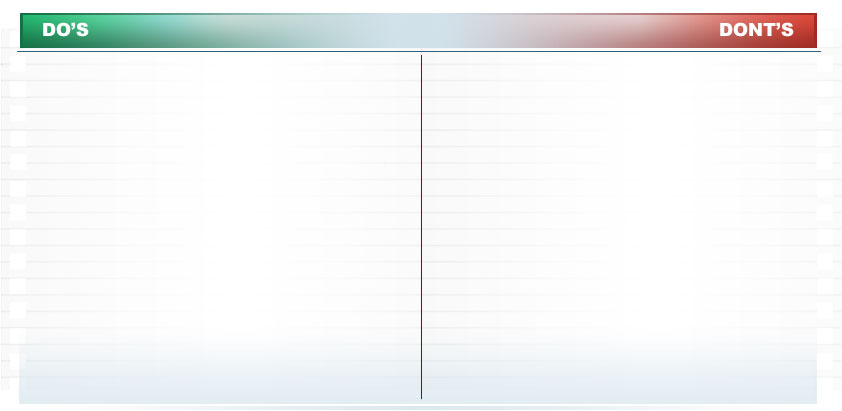

Module 2: Recruiting Done Well · Lesson 3: Recruiting the Right Way
Page 14 of 18
Do's and Don'ts When Interviewing
Interviewing is an important part of the hiring process. It’s also specifically regulated, so if you’ll be conducting interviews at a recruiting event it’s important to prepare specifically for that function. To get you started, here’s a list of some important do’s and don’ts when conducting interviews. 
- Ensure consistency between interviews by asking the same questions for each candidate applying for a given position
- Make sure to use the same forms for each applicant
- There is an interview template you can use found in the Resources section of this course. Discussion on how to customize the template appropriately can be found in Module 5.
- Ask job-related questions aimed toward eliciting an applicant’s qualifications
- Ask about:
- Race
- Gender
- National origin
- Citizenship (except to ask if the applicant is a U.S. citizen)
- Religion
- Age
- Marital Status/Family
- Political Orientation
- Sexual Orientation
- Disability
- Arrests/Institutional Confinement
- Test Questions
- Transportation
- Emphasize negative aspects of the position
- Discourage the applicant from applying
- Speculate on an applicant’s chances of being hired
Select FORWARD to continue.